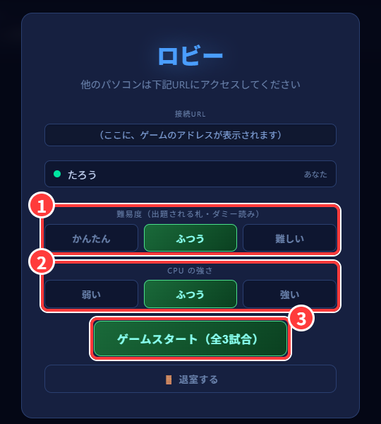
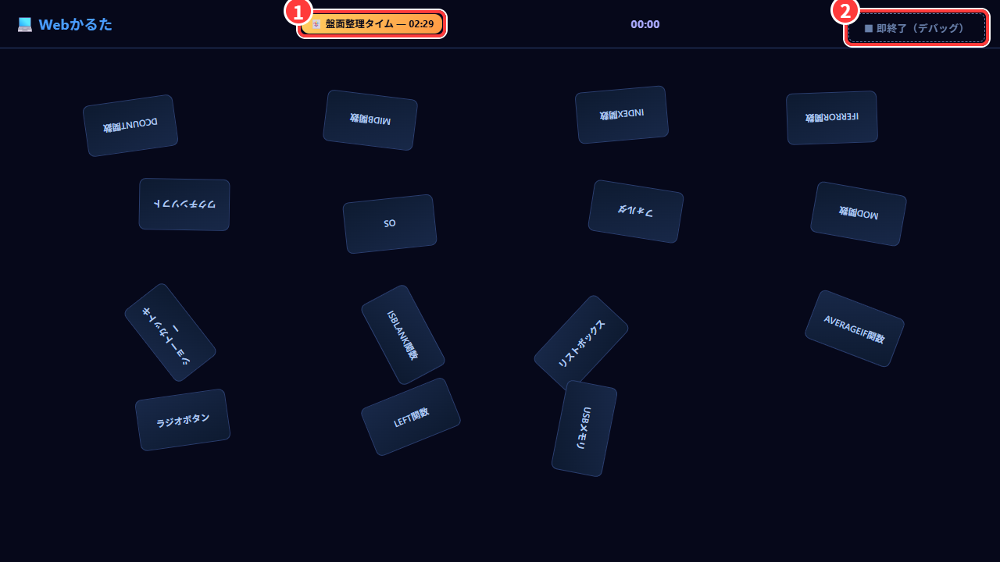
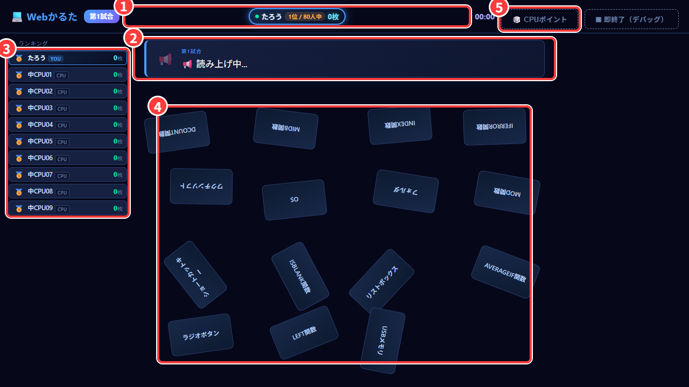
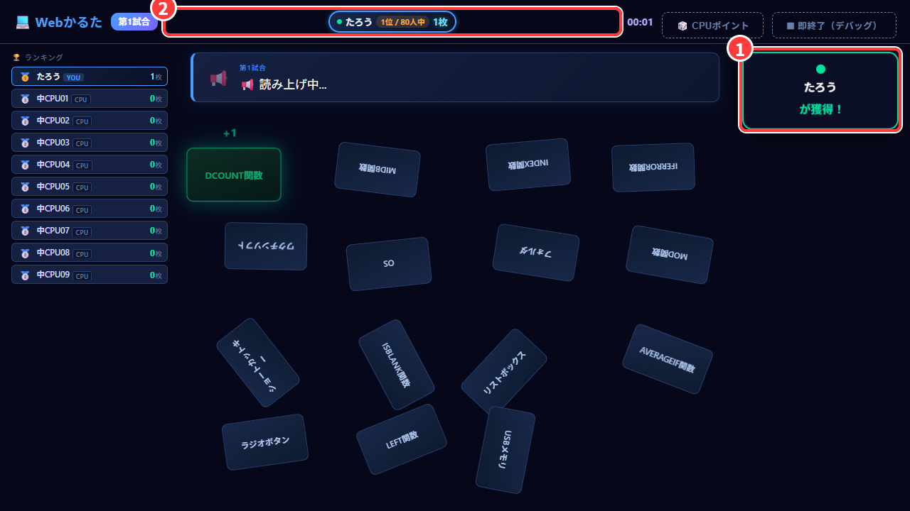
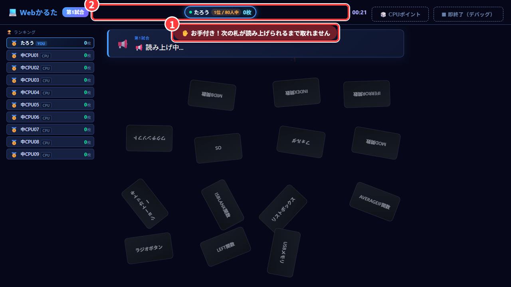
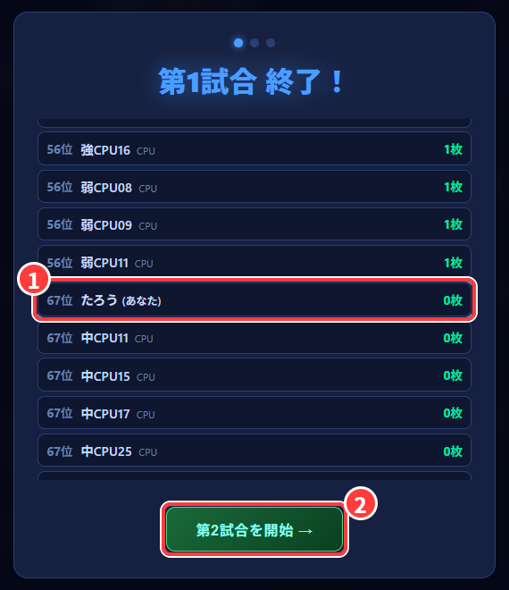

Webデザインサークル
Webかるた
遊び方ガイド
耳で聞いて、答えの札をクリック！ITの言葉を楽しく覚えよう
このガイドでわかること
- ゲームのひらき方（STEP 1）
- 難易度を選んでスタートする方法（STEP 2）
- 盤面整理の仕方（STEP 3）
- 遊び方とルール（STEP 4〜5）
- 結果の見方と、次の人への交代（STEP 6）
あらかじめ知っておいてください
- 札の読み上げは音声だけです。画面には出ません。
- 1試合は札15枚で、時間は約10分が目安です（全3試合）。1試合だけ遊んでもOKです。
🔊 音が出ないと遊べません。スピーカーの音量を確認してから始めましょう。
STEP 1ゲームをひらいて、名前を入れる
ゲームのひらき方
- 共有フォルダ「Webデザインサークル学園祭展示」を開きます。
- フォルダの中にある「Webかるた」のリンクをダブルクリックします。
- Google Chrome が開き、下の「名前入力」の画面が出ます。
名前を入れて「参加する」
1名前（ニックネーム）を入力します。15文字まで。ひらがなでも英字でもOK。入力するのは名前だけです。
2「参加する」をクリックします。次の画面（ロビー）に進みます。
⚠ 「参加する」を押してから音が出ます
ブラウザの決まりで、「参加する」を押すまでは音が鳴りません。音が出ないときは、パソコンの音量やミュートも確認しましょう。
前の人の画面が残っているとき
キーボードの F5 を押して最初からやり直します。
マウスだけの場合：アドレスバー左の🔄（更新）ボタンをクリックします。
画面を見やすくするコツ
キーボードの F11 で全画面になります（もう一度押すと戻ります）。文字や札が大きすぎ・小さすぎるときは、Ctrl を押しながら 0（ゼロ）で元の大きさに戻ります。
マウスだけの場合：右上の⋮（メニュー）を開き、「ズーム」の行にある拡大アイコン（⛶）で全画面、「－」「＋」で100%に調整します。
STEP 2難易度を選んで、ゲームスタート

ロビー（練習モードの設定画面）
1難易度を選びます（最初は「ふつう」）。
2CPUの強さを選びます（最初は「ふつう」）。
3「ゲームスタート（全3試合）」をクリックすると、ゲームが始まります。
CPUって？
コンピューターの対戦相手です。1試合は、あなたとCPUをあわせて約80人で札を取り合います。
難易度（出てくる札）
| 難易度 | どんな札が出るか |
|---|
| かんたん | やさしいIT用語と、基本のExcel関数が出ます。「ダミー読み」（盤面にない札の読み上げ）はありません。はじめての人におすすめ。 |
| ふつう | ふつうのIT用語と、少しむずかしいExcel関数が出ます。ときどき「ダミー読み」が入ります。 |
| 難しい | むずかしいIT用語と、Excel関数が出ます。「ダミー読み」が多くなります。 |
※どの難易度でも、札の約半分は「Excel関数」、残りはIT用語です。
CPUの強さ
| CPUの強さ | CPUの動き |
|---|
| 弱い | 反応がゆっくりで、まちがえることも多い。ゆっくり遊びたい人向け。 |
| ふつう | ほどよい速さ。 |
| 強い | 反応が速く、ミスも少ない。本気で勝負したい人向け。 |
STEP 3盤面整理タイム（はじまる前の準備）

盤面整理タイムの画面
ゲームを始めると、まず札が並んだ画面になります。これは、本物のかるたのように札を並べ替える時間です。
1上に表示されるカウントダウン（2分30秒）が終わると、自動で試合が始まります。
2すぐに始めたいときは、右上の「即終了（デバッグ）」ボタンを押すと、待ち時間を飛ばして始められます。
札の並べ替え（しなくてもOK）
- 画面の下半分の札は、マウスでつかんで動かせます（自分の陣地）。
- 取りやすい場所にまとめておくと、試合で取りやすくなります。
- 上半分の札は動かせません（相手の陣地）。
札に書いてあるのは「答え」です
札には、答えとなる用語だけが書かれています。読み上げられる説明文を聞いて、その答えの札を探します。
この時間は札を取れません
盤面整理タイムの間は、札をクリックしても取れません。試合が始まってから取りましょう。
STEP 4遊び方（試合中の画面）

試合中の画面
| 1自分の順位と札の枚数（例：1位 / 80人中 0枚） |
2読み上げの状況（「読み上げ中…」と出ます） |
| 3ランキング（上位10人） |
4札（答えの札をクリックして取ります） |
| 5補助ボタン（右上：「CPUポイント」「即終了」。くわしくは STEP 5） |
遊び方
- 「読み上げます」の声のあと、説明文が音声で読み上げられます。
- その説明に合う答えの札を、画面の中から探してクリックします。
- 正解の札を取ると+1枚。いちばん多く取った人が1位です。
① 耳で聞く説明文が読まれる
② 札を探す答えの札をさがす
③ クリック！取れたら +1枚
④ 正解発表「そこまで」＋答え
札に書いてあるのは「答え」だけ
説明文は画面に出ません。音声をよく聞いてから、札をクリックしましょう。
STEP 5ルール（取れたとき・まちがえたとき）

正解！ +1枚（右上に取った人の名前）

お手付き… -1枚（次の札まで取れない）
✅ 正解を取ると
札が消えて+1枚。取った人の名前が右上に出て、「そこまで」と正解の読み上げがあります。
✋ お手付きをすると
-1枚。しかも次の札が読み上げられるまで取れません（画面が暗くなります）。あわてず、聞いてから！
ルールのまとめ
| できごと | どうなる？ |
|---|
| 正解の札を取った | +1枚。次の札の読み上げに進みます。 |
| ちがう札を取った（お手付き） | -1枚（0枚からでもマイナスになります）。次の札が読まれるまで、その人は取れません。 |
| 10秒たっても誰も取れなかった | 「そこまで」。正解が発表されて、その札は終わり。誰にも枚数は入りません。 |
| ダミー読みのときにクリックした | 盤面にない札の説明が読まれることがあります。クリックするとお手付き（-1枚）です。読み上げのあと「これは盤面にない札でした」と言います。 |
| 同じ枚数の人がいる | 同じ順位（1位・1位・3位…）になります。 |
⏱ 制限時間は「読み上げが終わってから10秒」
説明文を最後まで聞いてから10秒間が取れる時間です。読み上げの途中でも取れます（CPUも同じです）。
STEP 6結果を見て、次の試合へ

第1・2試合のあとの結果
1自分の行（「あなた」と書かれた行）が、自分の順位と枚数です。
2第1・2試合のあとは「第○試合を開始」、最終試合のあとは「ロビーに戻る」を押します。
結果画面では、DJが順位や枚数を音声で読み上げます。3位以内に入ると「おめでとうございます」！
補助ボタンのやくわり
| ボタン | やくわり |
|---|
| 即終了（デバッグ） | 盤面整理タイムでは待ち時間を飛ばしてすぐ試合を始めます。試合中に押すと、その試合をすぐ終わらせて結果画面に進みます。押すと元に戻せません。 |
| CPUポイント | 押すと、CPUの札の枚数がランダム（0〜6枚）に変わります。順位争いの様子を変えたいときに使います。自分の枚数は変わりません。 |
| ロビーに戻る | 最終試合のあとに押すと、難易度を選ぶ画面に戻ります。 |
次の人に交代するとき
- キーボードの F5（マウスだけの場合：アドレスバー左の🔄更新ボタン）を押します。
- 名前入力の画面に戻るので、次の人が名前を入れて始めます。
お願い
- つながった人がみんな同じゲームに参加します。会場のパソコン以外のスマホなどでは開かないでください。